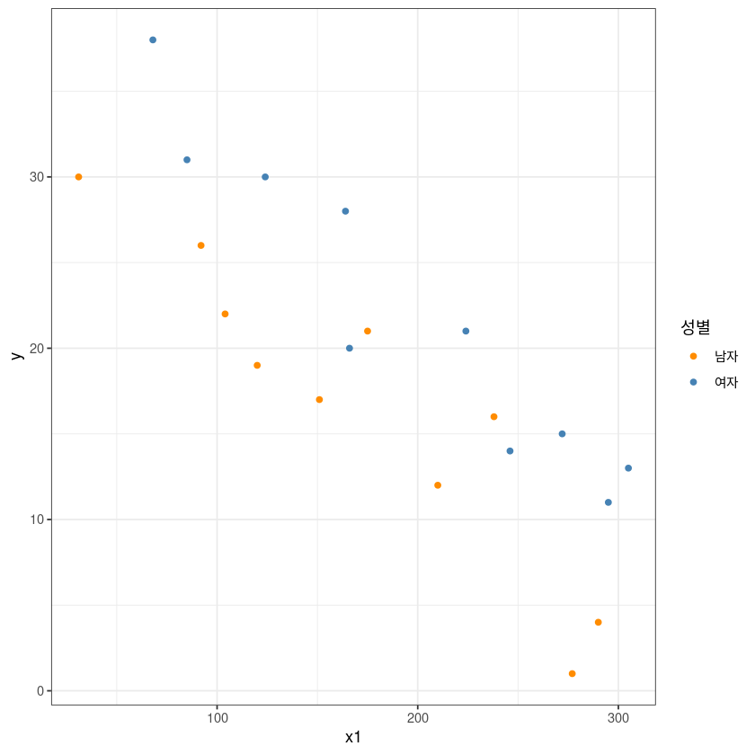
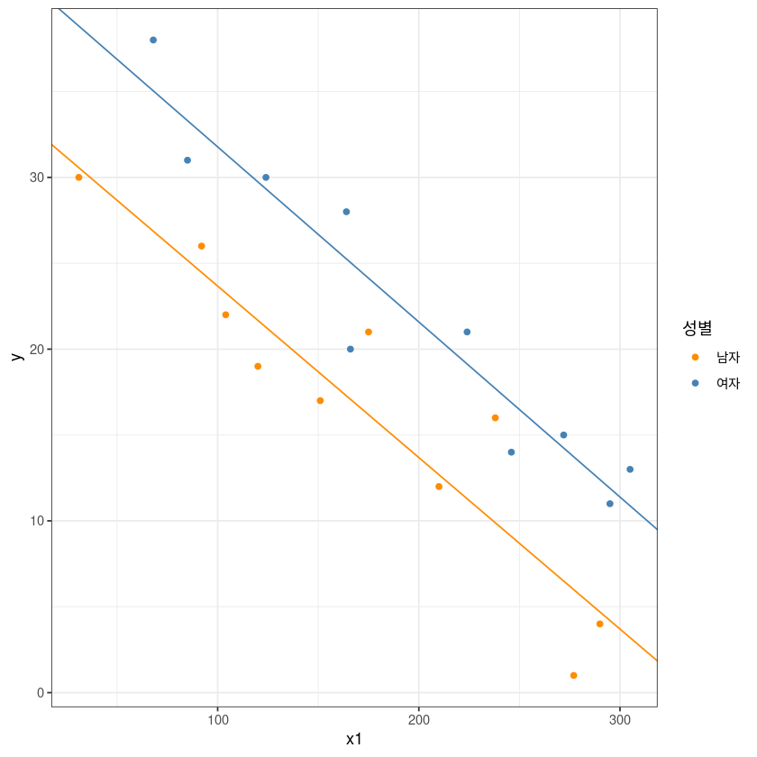
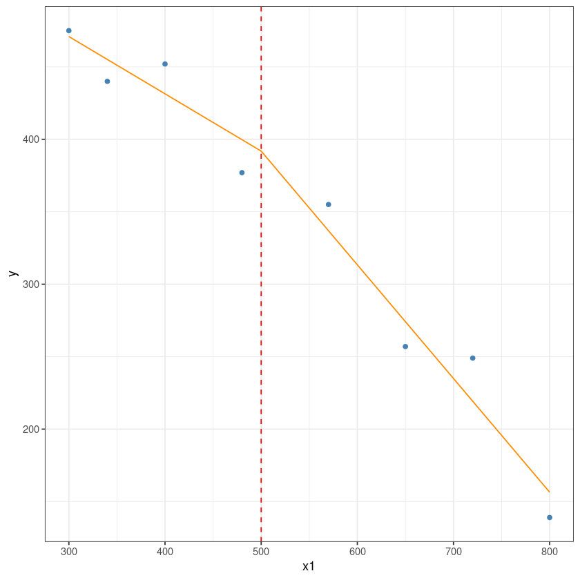

library(ggplot2)해당 강의노트는 전북대학교 이영미교수님 2022-2 고급회귀분석론 자료임
#### Example #############################################
dt <- data.frame(
y = c(17,26,21,30,22,1,12,19,4,16,
28,15,11,38,31,21,20,13,30,14),
x1 = c(151,92,175,31,104,277,210,120,290,238,
164,272,295,68,85,224,166,305,124,246),
x2 = factor(rep(c(0,1), each=10))
)head(dt)| y | x1 | x2 | |
|---|---|---|---|
| <dbl> | <dbl> | <fct> | |
| 1 | 17 | 151 | 0 |
| 2 | 26 | 92 | 0 |
| 3 | 21 | 175 | 0 |
| 4 | 30 | 31 | 0 |
| 5 | 22 | 104 | 0 |
| 6 | 1 | 277 | 0 |
contrasts(factor(dt$x2))| 1 | |
|---|---|
| 0 | 0 |
| 1 | 1 |
m <- lm(y~x1+x2, dt)
summary(m)
Call:
lm(formula = y ~ x1 + x2, data = dt)
Residuals:
Min 1Q Median 3Q Max
-5.0165 -1.7450 -0.6055 1.8803 6.1835
Coefficients:
Estimate Std. Error t value Pr(>|t|)
(Intercept) 33.834912 1.758659 19.239 5.64e-13 ***
x1 -0.100918 0.008621 -11.707 1.47e-09 ***
x21 7.933953 1.414702 5.608 3.13e-05 ***
---
Signif. codes: 0 ‘***’ 0.001 ‘**’ 0.01 ‘*’ 0.05 ‘.’ 0.1 ‘ ’ 1
Residual standard error: 3.123 on 17 degrees of freedom
Multiple R-squared: 0.8991, Adjusted R-squared: 0.8872
F-statistic: 75.72 on 2 and 17 DF, p-value: 3.42e-09# x2 = factor(rep(c('M','F'), each=10)) 로 입력한 경우
#y = b0 + b1x1 + b2x2
# x2 = 0, F
# x2 = 1, M
#E(y|M) : b0 + b1x1 + b2 = (b0 + b2) + b1x1
#E(y|F) : b0 + b1x1
# x2 = factor(rep(c(0,1), each=10))로 입력한 경우
# y = b0 + b1x1 + b2x2
# x2 = 0, M
# x2 = 1, F
#E(y|M) : b0 + b1x1
#E(y|F) : b0 + b1x1+ b2 = = (b0 + b2) + b1x1ggplot(dt, aes(x1, y, col=x2)) +
geom_point() +
theme_bw() +
guides(col=guide_legend(title="성별")) +
scale_color_manual(labels = c("남자", "여자"),
values = c("darkorange", "steelblue"))
m <- lm(y~x1+x2, dt)
summary(m)
Call:
lm(formula = y ~ x1 + x2, data = dt)
Residuals:
Min 1Q Median 3Q Max
-5.0165 -1.7450 -0.6055 1.8803 6.1835
Coefficients:
Estimate Std. Error t value Pr(>|t|)
(Intercept) 33.834912 1.758659 19.239 5.64e-13 ***
x1 -0.100918 0.008621 -11.707 1.47e-09 ***
x21 7.933953 1.414702 5.608 3.13e-05 ***
---
Signif. codes: 0 ‘***’ 0.001 ‘**’ 0.01 ‘*’ 0.05 ‘.’ 0.1 ‘ ’ 1
Residual standard error: 3.123 on 17 degrees of freedom
Multiple R-squared: 0.8991, Adjusted R-squared: 0.8872
F-statistic: 75.72 on 2 and 17 DF, p-value: 3.42e-09ggplot(dt, aes(x1, y, col=x2)) +
geom_point() +
theme_bw() +
geom_abline(slope = coef(m)[2], intercept = coef(m)[1], col= 'darkorange')+
geom_abline(slope = coef(m)[2], intercept = coef(m)[1]+coef(m)[3], col= 'steelblue')+
guides(col=guide_legend(title="성별")) +
scale_color_manual(labels = c("남자", "여자"), values = c("darkorange", "steelblue"))########## 교호작용
m1 <- lm(y~x1*x2, dt)
summary(m1)
Call:
lm(formula = y ~ x1 * x2, data = dt)
Residuals:
Min 1Q Median 3Q Max
-5.0463 -1.7591 -0.6232 1.9311 6.1102
Coefficients:
Estimate Std. Error t value Pr(>|t|)
(Intercept) 33.656104 2.365392 14.229 1.68e-10 ***
x1 -0.099858 0.012650 -7.894 6.59e-07 ***
x21 8.313516 3.541379 2.348 0.0321 *
x1:x21 -0.002089 0.017766 -0.118 0.9078
---
Signif. codes: 0 ‘***’ 0.001 ‘**’ 0.01 ‘*’ 0.05 ‘.’ 0.1 ‘ ’ 1
Residual standard error: 3.218 on 16 degrees of freedom
Multiple R-squared: 0.8992, Adjusted R-squared: 0.8803
F-statistic: 47.56 on 3 and 16 DF, p-value: 3.405e-08## y = b0 + b1x1 + b2x2 + b3x1x2
## M : x2=0 => E(y|M) = b0+b1x1
## F : x2=1 => E(y|F) = b0 + b1x1 + b2 + b3x1
## = (b0+b2) + (b1+b3)x1ggplot(dt, aes(x1, y, col=x2)) +
geom_point() +
theme_bw() +
geom_abline(slope = coef(m1)[2], intercept = coef(m1)[1], col= 'darkorange')+
geom_abline(slope = coef(m1)[2]+coef(m1)[4], intercept = coef(m1)[1]+coef(m1)[3], col= 'steelblue')+
guides(col=guide_legend(title="성별")) +
scale_color_manual(labels = c("남자", "여자"), values = c("darkorange", "steelblue"))
#######################################################
library(ISLR)
head(Carseats)| Sales | CompPrice | Income | Advertising | Population | Price | ShelveLoc | Age | Education | Urban | US | |
|---|---|---|---|---|---|---|---|---|---|---|---|
| <dbl> | <dbl> | <dbl> | <dbl> | <dbl> | <dbl> | <fct> | <dbl> | <dbl> | <fct> | <fct> | |
| 1 | 9.50 | 138 | 73 | 11 | 276 | 120 | Bad | 42 | 17 | Yes | Yes |
| 2 | 11.22 | 111 | 48 | 16 | 260 | 83 | Good | 65 | 10 | Yes | Yes |
| 3 | 10.06 | 113 | 35 | 10 | 269 | 80 | Medium | 59 | 12 | Yes | Yes |
| 4 | 7.40 | 117 | 100 | 4 | 466 | 97 | Medium | 55 | 14 | Yes | Yes |
| 5 | 4.15 | 141 | 64 | 3 | 340 | 128 | Bad | 38 | 13 | Yes | No |
| 6 | 10.81 | 124 | 113 | 13 | 501 | 72 | Bad | 78 | 16 | No | Yes |
dim(Carseats)- 400
- 11
• Sales : 판매량 (단위: 1,000)
• Price : 각 지점에서의 카시트 가격
• ShelveLoc : 진열대의 등급 (Bad, Medium, Good)
• Urban :도시 여부 (Yes, No)
• US: 미국 여부 (Yes, No)
fit <- lm(fit<-lm(Sales~Price+ShelveLoc+US,
data=Carseats))
summary(fit)
Call:
lm(formula = fit <- lm(Sales ~ Price + ShelveLoc + US, data = Carseats))
Residuals:
Min 1Q Median 3Q Max
-5.1720 -1.2587 -0.0056 1.2815 4.7462
Coefficients:
Estimate Std. Error t value Pr(>|t|)
(Intercept) 11.476347 0.498083 23.041 < 2e-16 ***
Price -0.057825 0.003938 -14.683 < 2e-16 ***
ShelveLocGood 4.827167 0.277294 17.408 < 2e-16 ***
ShelveLocMedium 1.893360 0.227486 8.323 1.42e-15 ***
USYes 1.013071 0.195034 5.194 3.30e-07 ***
---
Signif. codes: 0 ‘***’ 0.001 ‘**’ 0.01 ‘*’ 0.05 ‘.’ 0.1 ‘ ’ 1
Residual standard error: 1.857 on 395 degrees of freedom
Multiple R-squared: 0.5718, Adjusted R-squared: 0.5675
F-statistic: 131.9 on 4 and 395 DF, p-value: < 2.2e-16contrasts(Carseats$ShelveLoc)| Good | Medium | |
|---|---|---|
| Bad | 0 | 0 |
| Good | 1 | 0 |
| Medium | 0 | 1 |
## y= b0 + b1x1 + b2x2 + b3x3 + b4x4 + b5x5library(car)##H0 : beta2 = beta3 = 0
## b2 = 0, b3=0
C<-rbind(c(0,0,1,0,0,0),
c(0,0,0,1,0,0))
linearHypothesis(fit, C)ERROR: Error in L %*% b: non-conformable arguments############ 구간별 회귀분석
dt <- data.frame(
y = c(377,249,355,475,139,452,440,257),
x1 = c(480,720,570,300,800,400,340,650)
)
dt$x2 = sapply(dt$x1, function(x) max(0, x-500))m <- lm(y ~ x1+x2, dt)
summary(m)
Call:
lm(formula = y ~ x1 + x2, data = dt)
Residuals:
1 2 3 4 5 6 7 8
-22.765 29.765 18.068 4.068 -17.463 20.605 -15.117 -17.160
Coefficients:
Estimate Std. Error t value Pr(>|t|)
(Intercept) 589.5447 60.4213 9.757 0.000192 ***
x1 -0.3954 0.1492 -2.650 0.045432 *
x2 -0.3893 0.2310 -1.685 0.152774
---
Signif. codes: 0 ‘***’ 0.001 ‘**’ 0.01 ‘*’ 0.05 ‘.’ 0.1 ‘ ’ 1
Residual standard error: 24.49 on 5 degrees of freedom
Multiple R-squared: 0.9693, Adjusted R-squared: 0.9571
F-statistic: 79.06 on 2 and 5 DF, p-value: 0.0001645dt2 <- rbind(dt[,2:3], c(500,0))
dt2$y <- predict(m, newdata = dt2)# this is the predicted line of multiple linear regression
ggplot(data = dt, aes(x = x1, y = y)) +
geom_point(color='steelblue') +
geom_line(color='darkorange',data = dt2, aes(x=x1, y=y))+
geom_vline(xintercept = 500, lty=2, col='red')+
theme_bw()